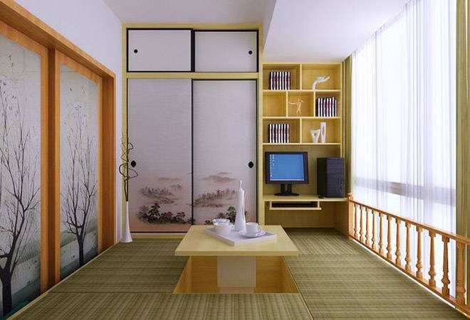

日式室内设计中色彩多偏重于原木色，以及竹、藤、麻和其他天然材料颜色，形成朴素的自然风格。日式设计风格讲究空间的流动与分隔，流动则为一室，分隔则分几个功能空间，空间中总能让人静静地思考。
日式装修要注意防潮：建议在铺地板之前，在地上先打龙骨，使之与地面有一定的距离。传统的日式装修很不同于欧式风格的豪华奢侈、金碧辉煌，而是注重一种境界，追求淡雅节制、深邃禅意的感觉。日式装修好像田园风格一样，注重与大自然相融合，所用的装修建材也多为自然界的原材料。
传统的日式家具以其清新自然、简洁的独特品味，形成了独特的家具风格，对于活在都市森林中的我们来说，日式家居环境所营造的闲适、悠然自得的生活境界，也许就是我们所追求的。 领略不俗风采 典雅又富有禅意的日式家居风格在我国可谓是大行其道，异域风格的表现手法使得人们的喜爱，又能领略到其中的不俗。 日式风格装修的特点是淡雅、简洁, 它一般采用清晰的线条，使居室的布置带给人以清洁，有较强的几何立体感。